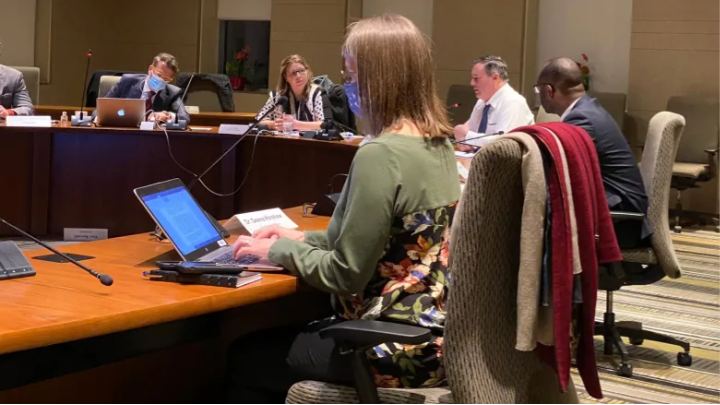

Jason Kenney Caught not Following his Own Covid Rules
January 7th, 2021
I actually wrote this article before Christmas, I just forgot to upload it.
I know, I'm terrible.
CBC:
TDC_ARTICLE_START
A photo shared on social media by Alberta's justice minister has sparked outrage and two official complaints for allegedly violating the province's COVID-19 public health orders related to mask use in indoor work places.
A public health order issued by Dr. Deena Hinshaw, Alberta's chief medical officer of health, on Dec. 8 requires mandatory mask use in all indoor workplaces and facilities outside the home. It applies to all employees and includes any location where employees are present in person. An employee would be exempt if they are working alone in an office, in a safely distanced cubicle or if a barrier is in place.
TDC_ARTICLE_STOP

I'm going to go out on a limb here and say that it looks like Kenney is neither working alone, nor in an office, nor in a "safely distanced cubicle." In fact, there doesn't even appear to be a barrier in place.
So weird. I was informed that these people took COVID extremely seriously, and the response is to be taken beyond seriously. After all, peoples lives are at stake here.
Anyway, as expected this CBC propaganda piece gets really gay and Talmudic, and the propagandist wastes precious space about the definition of "workstation."
TDC_ARTICLE_START
Issue revolves around definition of 'workstation'
Associate professor Lorian Hardcastle, also in the faculty of law at the University of Calgary, says the second government photo shows more spacing between Kenney and Madu.
However, the issue relates to how the chief medical officer of health defines individual work spaces.
"I think under any reasonable interpretation of the public health orders, a workstation is its own sort of singular place where one person sits, like a cubicle or like a desk, and not a table," she said.
"The public health order doesn't define that word 'workstation,' it merely says that this masking requirement doesn't apply to people who are alone at workstations and separated by at least two metres."
TDC_ARTICLE_STOP
Yeah this is so fucking gay that I'm a little flabbergasted. I guess they've just completely given up on the pretext of there being any sort of scientific rationale for these rules, if the position you are seated at is a "workstation," or not. Like, it's not about how close you are to people, it's about whether some imaginary bubble around you could be called a "workstation."
Anyway there were two formal complaints filed by shitty people with pronouns in their bio's. I suspect this isn't going anywhere. Rules are for the commoners.